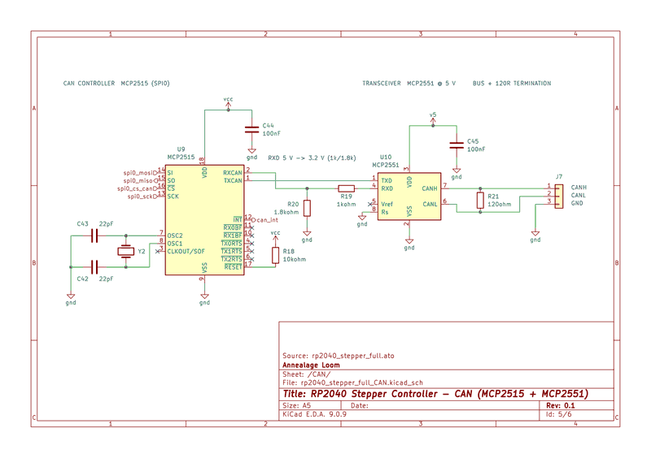
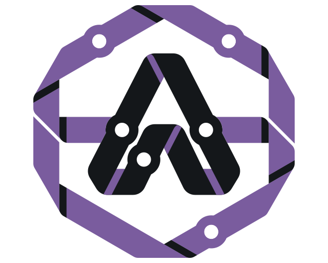

Tokens
One neutral surface for every product. The product changes the four temper tokens and nothing else; with no product they fall back to ink.
--ground--well--field--ink--ink-2--ink-3--rule--rule-strong--hover--press--temper--temper-text--temper-wash--ember--quench--danger--warn--paperType
Instrument Sans for the interface, Red Hat Mono for data only. Hierarchy comes from weight and ink level, not size.
Title 18px / 600
Datasheets
Interface 13px / 400, 500, 600
Reading 14px / 21px
The MCP2562FD takes VIO straight from 3V3, so the R19/R20 divider on RXD can go.
Small 12px
Data .mono, code
CL05A104KA5NNNC131.9, 62.9$0.41USB_DPControls
Button .btn
Disabled, with the reason :disabled, [aria-disabled=true]title
Small, icon .btn.sm, .btn.icon
Allow .btn.ember
Link button .linkish
Field .input, .inputwrap
Command field .cmd
Command palette .palette-box.palette-group .palette-row .palette-empty
Check, radio, switch
Segmented .seg
Chips .chips > .chip
Count, tag .n, .tag
Scheme switch [data-scheme-toggle]
Lamps, markers, readouts
The three things taken from the marks. A lamp is a square, never a dot. A marker has one corner cut at 45°. A readout is a mono figure in a recessed field.
Lamp .lamp
State .state[data-kind]
Connection .conn[data-state]
Plate marker .mk
Readout .readout > .val + .lg
Progress .pline, .meter
Paper .paper

Menus and disclosures
Menu .menuwrap > .menu
More
Disclosure .discs > details.disc
Limits and storage
Design uploads: up to 128 MiB per file, 512 MiB expanded.
Import options
Closed.
Panel text and field lists
Heading .subhead
Notice .notice
The inventory was checked 10 Nov 2026 at 10:35 UTC.
All ten part groups are covered.
Seven part groups have no datasheet. The review carries them as gaps.
The upload failed: the archive has more than 256 entries.
Empty, hint, note .empty .hint .note .metaline
No comments on this sheet yet.
Click the drawing to pin a comment.
R3 and R4 are 27 Ω but sit on the QSPI lines.
Fields dl.fields
- Part
- shroud
- Face
- −Y
- At (mm)
- 14.4, −44.6, 61.0
Field list dl.fl
- Title
- RP2040 Basic Support
- Revision
- 1.0.3
- Parts
- 25
Summary dl.fl.ruled
- Stage
- Quick
- Parts
- 25
- Gaps carried into the report
- 7
Terms dl.fl.stack
- KiCad
- The .kicad_pro, the root schematic and every referenced sheet.
- Eagle
- A .sch.
Properties .propshead, table.props
| Footprint | QFN-56-1EP_7x7mm_P0.4mm |
|---|---|
| At | 24.13, 19.05 mm, 0° |
| Nets | , and 41 more |
Tables
Data table table.dtable
| Method | Detail | Uses | State | |
|---|---|---|---|---|
| Passkey | MacBook Touch ID | 41 | Active | |
| GitHub | alex-eng | 7 | Unused | |
| Email link | alex@example.com | 2 | Unverified |
Selectable table .dt.dt-bulk .dt-head .dt-row .dt-detail .exp
Datasheet details
- Candidate
- abm8-272-t3.pdf
- Source
- Datum, shared library
Bars and tabs
The frame's rows, each shown on its own. workbench.html has them assembled.
Title bar .titlebar.mark .prod .tsep .crumbs .stageline .cmd .tb-right
Document label .doc
~/cad/dual-pci/cad/clip.pyview onlyView tabs .vhead > .vtab.vsep, .vtab.second, .meta, .right
Sheet tabs, well text .subtabs > .subtab.hud, .zoom
Product tabs .prodtabs
Tool rail .rail > .tool
Status bar .statusbar.conn, .alert, .push, b
Preview bar .previewbar
Inspector
Pane .inspector.ihead .ptabs .iscroll .sec .secbody .row .ifoot
Pins on a drawing
On paper, as HTML button.hpin > .mk
In SVG g.pin > .dot + text.model .resolved .ring .pindraft
Comment composer form.composer
Timeline
Events ol.tl > li.ev.node--msg --build --ev --wait --now, .is-preview, form.restore
Session started
- 3 parts
You 2
Move the brace back 8 mm and take the side wall to 2.4 mm.
Edit
model.pyrp-3Wall and brace offset.
- +4
−2 WALL2.0 → 2.4- 1 defect
- 1 warning
- +4
Waiting on you to allow a write
Now
Review: findings, coverage, a run
Findings .filters, details.finding.sev .fid .fstat .ftri .fver .fstale .claim .subj .fbody .evidence
CriticalQ-004confirmedUSB D+ and D− have no series resistors; the RP2040 needs 27 Ω on each line.U6.46U6.47USB_DP
U6.46U6.47USB_DPEvidence
- Datasheet: 27 Ω series termination.
- NetlistUSB_DP: U6.47, J1.A6. No R on net.
R3 and R4 are 27 Ω but sit on the QSPI lines.
MajorQ-007needs evidencestaleCrystal load capacitors look low for a 12 MHz ABM8-272-T3.Y1C29
Y1C29MinorQ-009confirmedacceptedercThe 1V1 rail has one 100 nF decoupler for two DVDD pins.
InfoQ-011unverifieddismissedTest points are not labelled.
MinorQ-002refutedFlash chip select has no pull-up.
Coverage details.sec.cov.covcounts .covlist .covhead
Power 2 checked1 no evidence
- Rail voltages against absolute maximums
- Inrush on VBUS
- Sequencing (not checked in Quick)
Run console section.console.chead .cbody ol.steps li.step[data-state] pre.log
Review
QuickWorking 6:04- Read the design
- Quick review
- Power
- Flash and boot
- Verify findings
- Export report
- Detailed review
14:26:02 quick: power done, 3 candidate findings 14:28:11 quick: ABM8-272-T3 has no confirmed datasheet 14:29:30 export: report template missing
Agent pane
The markup annealage-ember's chat.js builds, in every state it can produce. A log, not a chat; the pending approval is the only bordered box.
Pane #chatheader, .chatbanner, #chatLog, .side
Status .agentstatus[data-state]
Source, axes, sketch
Colours drawn by products with no component of their own. Source is ink level and weight with two hues (strings and numbers); the axes are the CAD convention, muted; the sketch stroke is one value in both schemes with a casing.
Source pre.src, ol.src.tok-keyword .tok-defname .tok-builtin .tok-decorator .tok-number .tok-string .tok-comment
# Transceiver on 3V3 VIO@sheet("CAN")def can_sheet(v3v3, gnd):u10 = Part("Interface_CAN_LIN", "MCP2562FD-E-SN")u10["VIO"] += v3v3c45 = Part("Device", "C", value=100e-9)return u10, c45
for ref in ("R19", "R20"):
print(ref, 10_000) # on the groundclass Shroud:
wall = 2.4 # search match
brace = 8 # current match
clip = "snap" # selectedScene axes --mv-axis-x --mv-axis-y --mv-axis-z
Sketch stroke --sketch --sketch-halo
Confirm
The page's own confirmation, in place of the browser's confirm(). Opened next to the control that asked by confirm.js; the control is disabled while it is open. The solid ink button is a spend, danger text is a destructive action, and neither is ember, so an agent approval can still be the view's one ember element.
Destructive .confirm[data-kind=danger].ch .cd .cacts
Delete 3 pins
They are removed from the model and the agent will no longer see them.
Spend, with fields .confirm[data-kind=spend]dl.fl
Start review
It runs in the background and spends from this workspace's quota.
- Stage
- Quick
- Model
- claude-sonnet
- Limit
- $5 per run
Long consequence details.disc
Discard the unsaved requirements
What this does
Everything typed since the last save is dropped, including the three open questions you answered, and the agent is told the draft was discarded. The saved version is not changed, and nothing already sent to the agent can be taken back.
In a table .dt-detail > .confirm
Remove the datasheet for ABM8-272-T3
The part goes back to having a gap.
Settings window
What settings.js builds inside the page's #settingsModal.modal, shown here in place.
Window .setpanel.setwarn .setbody .setrow .setlabel .setinput .setnote .sethelp .diagrow .logrow .logtail
Settings
Models and providers
Which model each kind of work uses.
Changes apply to the next session.
Profile
Agent
Provider sign-in
Diagnostics
Agent log
10:40:52 session started 10:41:03 turn 1 end_turn
Pages outside the workbench
From pages.css. flow.html, list.html and settings.html have them assembled, and at 400px.
Title row .pagehead
Drop label.drop, .dropstrip
Steps ol.flowsteps > li.flowstep[data-state]
Readiness .ready > .figs + .ready-r + .segbar
- Part groups
- 10
- Covered or exempt
- 2
- With candidates
- 1
- With gaps
- 7
Options .optlist > label.opt
Section, value row section.card, .linkrow
Share
Anyone with the link can read the report.
Labelled rows .rows > .fr.fr.item, .fr.sum, .total
- Name
- Alex Engineer

- Trace14 reviews$38.20
- Total$150.60